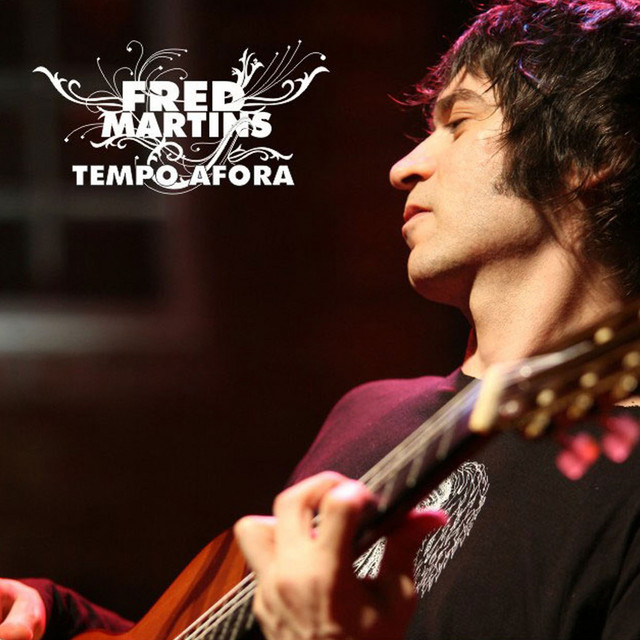
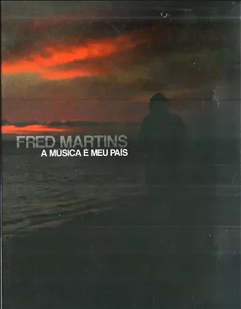
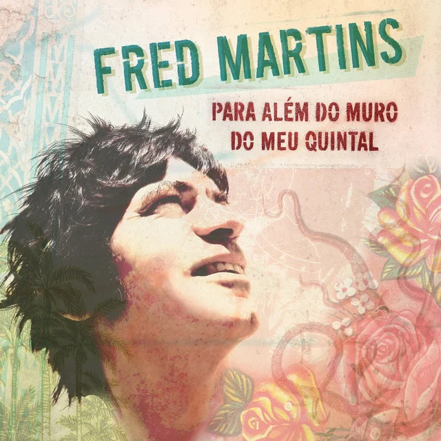
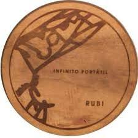
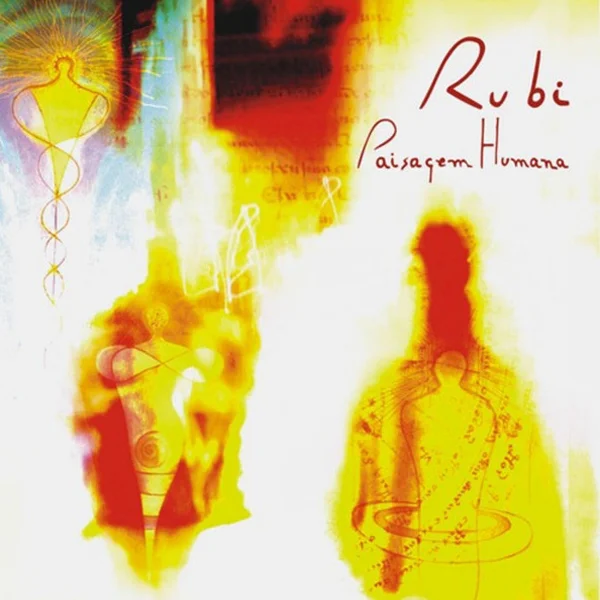
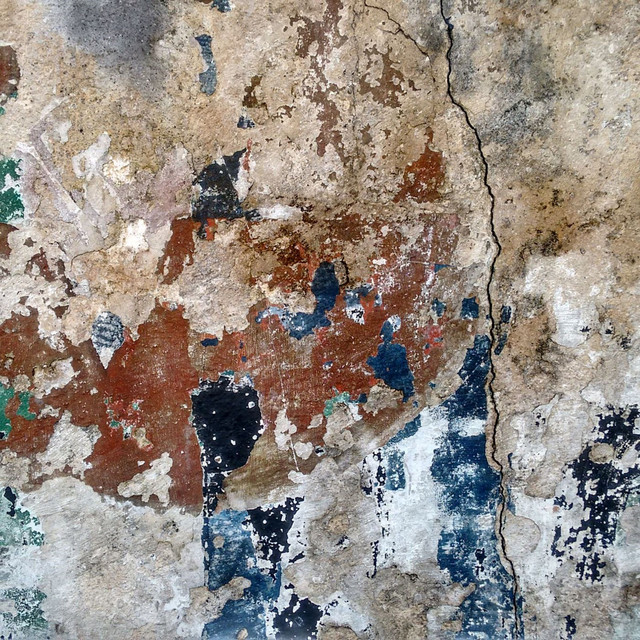

A Sete Sóis atua desde 2004 na produção musical e gestão de projetos culturais, com foco na excelência artística e na valorização da música brasileira.
A Sete Sóis Produções Artísticas Ltda. é um selo musical independente e produtora cultural sob direção do poeta, compositor e produtor Flávvio Alves Costa, um dos fundadores do selo.
Ao longo de duas décadas, a Sete Sóis lançou mais de 70 álbuns e desenvolveu centenas de shows e projetos culturais. Obras do catálogo já foram gravadas por artistas como Ceumar, Renato Braz, Zeca Baleiro, Fred Martins e Rubi.
A distribuição digital dos lançamentos é realizada pela Tratore, com presença em todas as plataformas de streaming.
Da concepção criativa à entrega final, a Sete Sóis oferece estrutura completa para projetos musicais e culturais.
Coordenação de gravações, arranjos, mixagem e masterização com parceiros como o Estúdio Canto da Coruja.
Elaboração de projetos para editais e patrocínios, com histórico de aprovações em órgãos de fomento.
Concepção, edição e lançamento de álbuns com distribuição Tratore em todas as plataformas.
Realização de shows, lançamentos e eventos culturais com estrutura técnica completa.
Uma seleção de projetos desenvolvidos em parceria com artistas, instituições e órgãos de fomento.

Canal Brasil / GlobosatEspecial de TV gravado para o Canal Brasil/Globosat e lançado em CD e DVD. Contou com a participação de Ney Matogrosso e excelente recepção da crítica especializada.

Canal BrasilDVD gravado ao vivo no Teatro da UFF (Niterói) com parceria do Canal Brasil e produção da Calabouço Filmes. Canções marcantes com participações especiais, incluindo Zélia Duncan.

Sete SóisÁlbum lançado pelo selo Sete Sóis com distribuição Tratore, com canções que retratam a musicalidade brasileira. Gravado em Portugal com lançamento simultâneo no Brasil e Europa.

Sete SóisDisco conceitual lançado pelo selo Sete Sóis, com design arrojado em estojo redondo de madeira embuia. Projeto semi-artesanal que privilegia a voz e a instrumentação.

Petrobras / EldoradoCo-produção entre Petrobras, Eldorado e Sete Sóis. O disco foi selecionado no programa Rumos Itaú Cultural 2008. Rubi é reconhecido com 3º lugar no Prêmio Visa MPB.

Sete Sóis / TratoreÁlbum que conclui projeto iniciado em 2016 no Caminho de Santiago. Sonoridade folk com influências de Antônio Marcos a Jethro Tull, lançado com distribuição Tratore.
O catálogo da Sete Sóis reúne artistas da música brasileira de reconhecimento crítico e público, com obras gravadas e distribuídas nacionalmente.
A Sete Sóis está aberta a novas parcerias com artistas, instituições e órgãos de fomento. Oferecemos estrutura completa para captação, produção e execução de projetos culturais.
Entre em contato